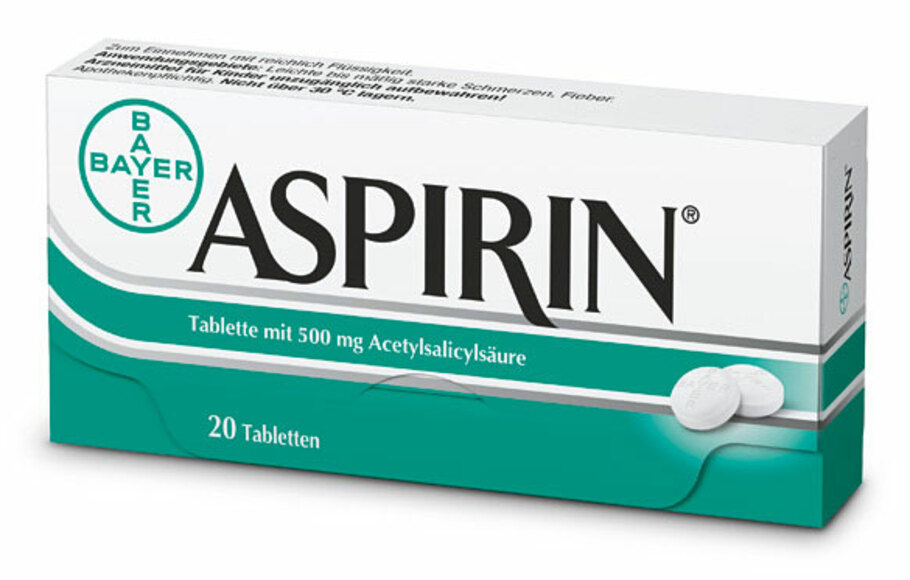

Migrain
Migrain adalah nyeri kepala dengan serangan nyeri yang berlangsung 4 – 72 jam. Nyeri biasanya unilateral, sifatnya berdenyut, intensitas nyerinya sedang sampai berat dan diperberat oleh aktivitas, dan dapat disertai mual muntah, fotofobia dan fonofobia.
- Gejala : Merasakan sakit pada kepala hanya sebelah bagian, hanya sebelah kanan atau kiri saja, tidak seluruh bagian kepala.
- Penyebab : Paparan asap rokok, parfum yang menyengat atau aseton (penghapus cat). Dampak emosional, misalnya merasa stres berlebih, depresi, burnout, atau terlalu bahagia. Tubuh kelelahan dan kualitas tidur yang buruk.
-
Pengobatan Konvensional
Aspirin
- Kandungan : Acetylsalicylic Acid 80 mg
- Dosis : Dosis awal 300–900 mg, diberikan setiap 4–6 jam. Dosis maksimal 4.000 mg per hari.
- Indikasi : Aspirin merupakan obat golongan antiinflamasi nonsteroid yang bekerja untuk mencegah pembentukan prostaglandin, yaitu zat yang memicu timbulnya peradangan, nyeri, atau demam, sehingga kondisi tersebut dapat mereda.
- Kontra indikasi :
- - Beri tahu dokter mengenai penggunaan aspirin jika Anda direncanakan untuk menjalani operasi, termasuk operasi gigi.
- - Beri tahu dokter jika Anda sedang hamil, menyusui, atau sedang merencanakan kehamilan.
- - Beri tahu dokter jika Anda sedang menggunakan obat, suplemen, atau produk herbal tertentu, untuk menghindari terjadinya efek interaksi antar obat.
- ESO : Berikut adalah beberapa efek samping yang bisa muncul setelah mengkonsumsi aspirin: seperti, Sakit kepala ringan, Kantuk, Sakit perut, Rasa panas di dada (heartburn).
-
Pengobatan Herbal
Jahe
- Tak hanya menghangatkan tubuh, jahe juga bisa dijadikan sebagai obat herbal untuk menghilangkan migrain secara alami. Bahkan, dalam penelitian yang dipublikasikan di jurnal Phytotherapy research, bubuk jahe disebut dapat mengurangi tingkat keparahan dan juga durasi migrain sama halnya seperti obat sumatriptan.

Ginkgo Biloba
- Ginkgo biloba (tanakan) populer manfaatnya sebagai obat alami untuk meningkatkan daya ingat. Tak hanya yang populer, sebuah penelitian dari Journal of the Neurological Sciences tahun 2014 juga menemukan potensi ginkgo biloba sebagai obat alami untuk migrain.